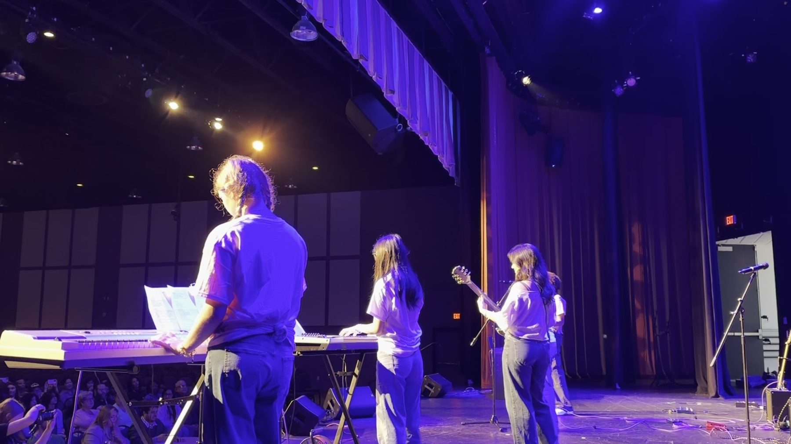
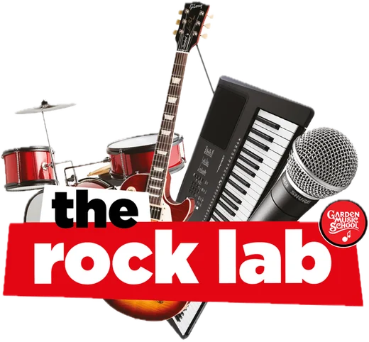
🏆 Division 1 ChampionsCampeones División 1GMS Rock Lab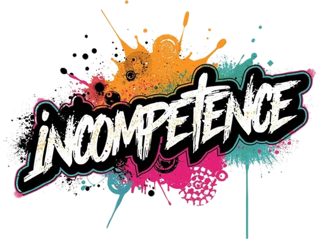
🏆 Division 2 ChampionsCampeones División 2IncompetenceTwelve student bands from five Central Florida music schools took a professional stage for a full day — real judges, real awards, two masterclasses, and a crowd that voted. Thank you, Central Florida. See you in 2027. Doce bandas estudiantiles de cinco escuelas de música de Florida Central tomaron un escenario profesional por un día completo — jueces reales, premios reales, dos masterclasses y un público que votó. Gracias, Florida Central. Nos vemos en 2027.
Music schools usually work in their own worlds. World of Bands Florida was created to build bridges between them — Central Florida's first inter-school band championship. Five schools sent their top bands to one professional stage, with independent industry judges, real awards, and a crowd that got a vote. The goal is bigger than a trophy: give students a professional stage, honest feedback from working musicians, and a room full of peers from across the region who love what they love. Students learned. They performed. They connected. And they took their skills to the next level. Las escuelas de música suelen trabajar cada una en su mundo. World of Bands Florida nació para construir puentes entre ellas — el primer campeonato de bandas entre escuelas de Florida Central. Cinco escuelas enviaron sus mejores bandas a un escenario profesional, con jueces independientes de la industria, premios reales y un público que votó. La meta es más grande que un trofeo: darles a los estudiantes un escenario profesional, comentarios honestos de músicos en activo y una sala llena de compañeros de toda la región que aman lo mismo que ellos. Aprendieron. Tocaron. Conectaron. Y llevaron sus habilidades al siguiente nivel.
It started in 2025 as a two-school Battle of the Bands with eight bands. In 2026 The World of Music School hosted the first full World of Bands: five schools, twelve bands, two divisions, and two champions. 2027 is next. Empezó en 2025 como un Battle of the Bands de dos escuelas y ocho bandas. En 2026 The World of Music School organizó el primer World of Bands completo: cinco escuelas, doce bandas, dos divisiones y dos campeones. Lo que sigue es 2027.
Two live masterclasses on event day, taught by working industry professionals — open to students, parents and fans.Dos masterclasses en vivo durante el evento, dictadas por profesionales de la industria — abiertas a estudiantes, padres y fans.
Every band performed twice on a professional stage with pro sound and lighting — a qualifying set and a full division set. No band was eliminated.Cada banda tocó dos veces en un escenario profesional con sonido e iluminación pro — un set clasificatorio y un set completo de división. Ninguna banda fue eliminada.
Musicians met peers from other schools, shared the backstage, traded ideas — and the day ended with one giant group photo of every band in the building.Los músicos conocieron a compañeros de otras escuelas, compartieron el backstage, intercambiaron ideas — y el día cerró con una foto grupal gigante con todas las bandas.
Twelve student bands from five Central Florida music schools. Every band played twice on Sunday — a 5-minute qualifying set, then a full 10-minute set in its division. Here is where each one landed.Doce bandas estudiantiles de cinco escuelas de música de Florida Central. Cada banda tocó dos veces el domingo — un set clasificatorio de 5 minutos y luego un set completo de 10 minutos en su división. Aquí está dónde quedó cada una.
The full picture is on the results page.El panorama completo está en la página de resultados. Both podiums, all three Crowd's Favorite winners, and every performance and instrument award in each division — names only, no scores.Ambos podios, los tres Favoritos del Público y cada premio de desempeño e instrumento en cada división — solo nombres, sin puntajes.
See the ResultsVer los ResultadosBand trophies, Crowd's Favorite, category recognitions and individual musician awards — presented separately in each division. Here are the podiums; the full list is on the results page.Trofeos de banda, Favorito del Público, reconocimientos por categoría y premios individuales — entregados por separado en cada división. Aquí están los podios; la lista completa está en la página de resultados.
No band was eliminated, and every one of the 68 performers received official event recognition.Ninguna banda fue eliminada, y cada uno de los 68 músicos recibió reconocimiento oficial del evento.
Leave your email and you'll hear first: the date, the schools, and early access to tickets before they go public. A few emails a year, nothing more.Deja tu correo y serás de los primeros en saber: la fecha, las escuelas y acceso anticipado a los boletos antes de que salgan al público. Unos pocos correos al año, nada más.
Five schools, twelve bands, 68 performers and one full Sunday at the Clermont Performing Arts Center. This is what Central Florida's first inter-school band championship looked like.Cinco escuelas, doce bandas, 68 músicos y un domingo completo en el Clermont Performing Arts Center. Así se vio el primer campeonato de bandas entre escuelas de Florida Central.
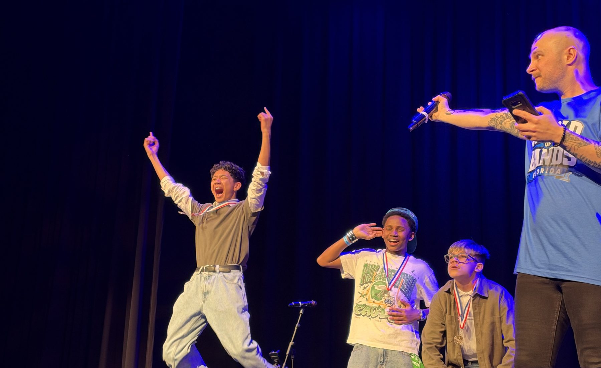
Arms up on the main stageBrazos arriba en el escenario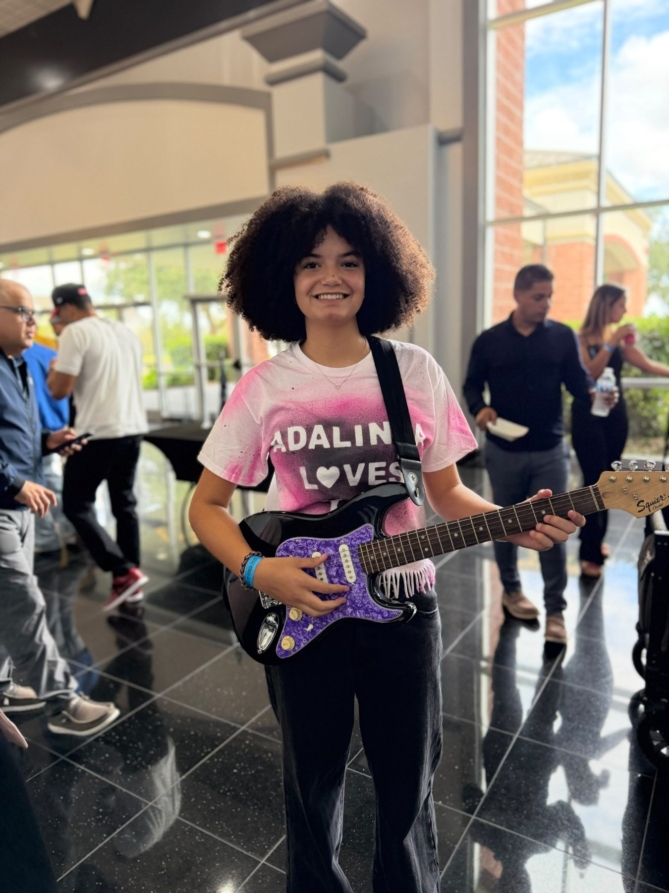
Adalinda in the lobbyAdalinda en el lobby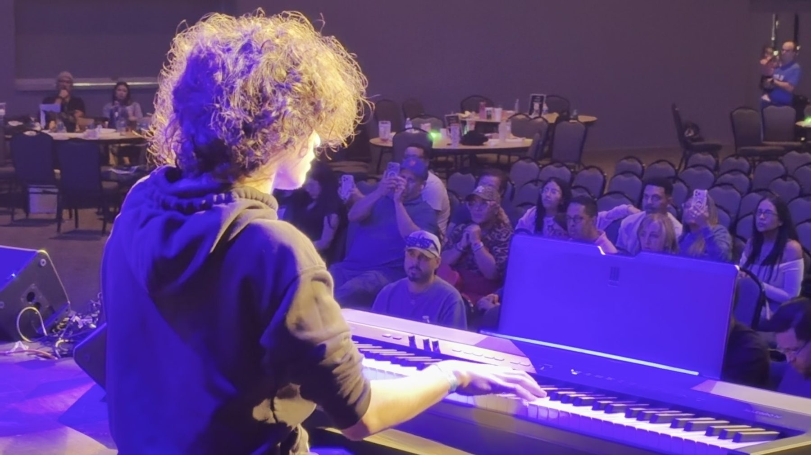
Keys, with the crowd behindTeclado, con el público detrás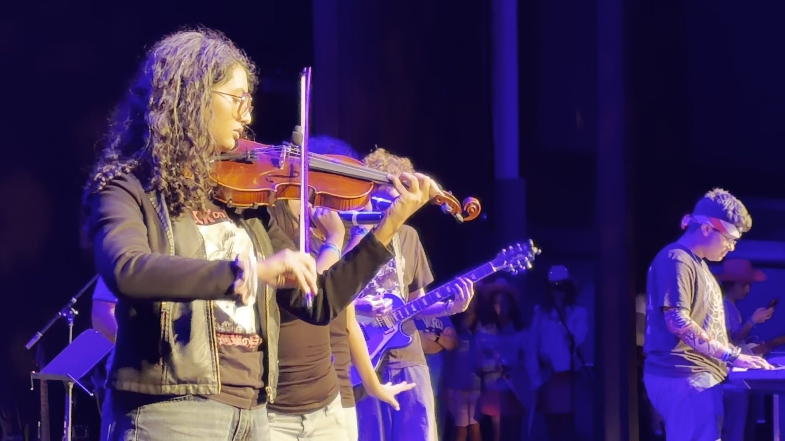
Special instrumentInstrumento especial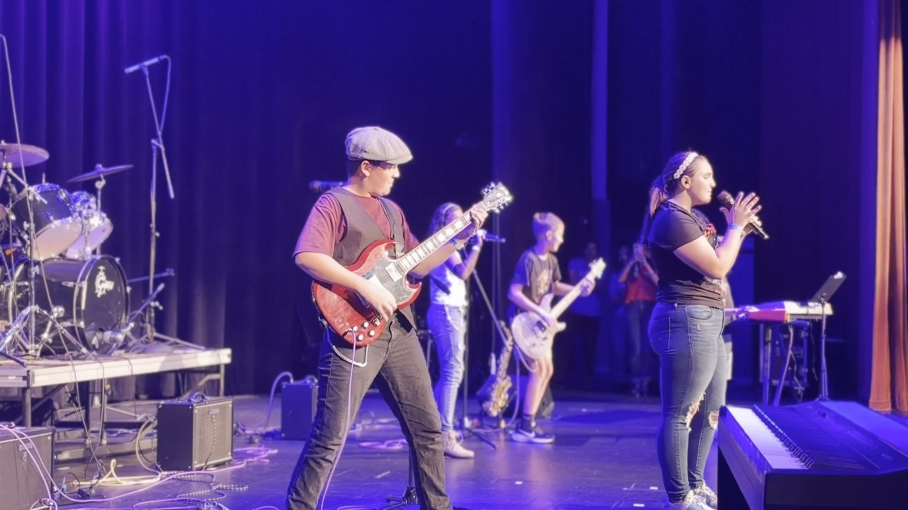
A full 10-minute division setUn set completo de 10 minutos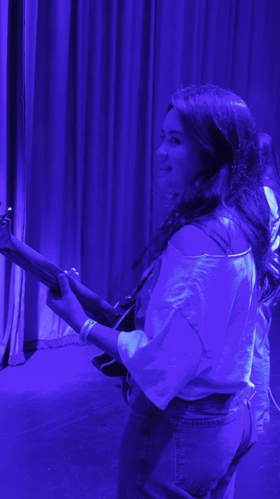
Division 1 Final, lights onFinal de la División 1, luces encendidas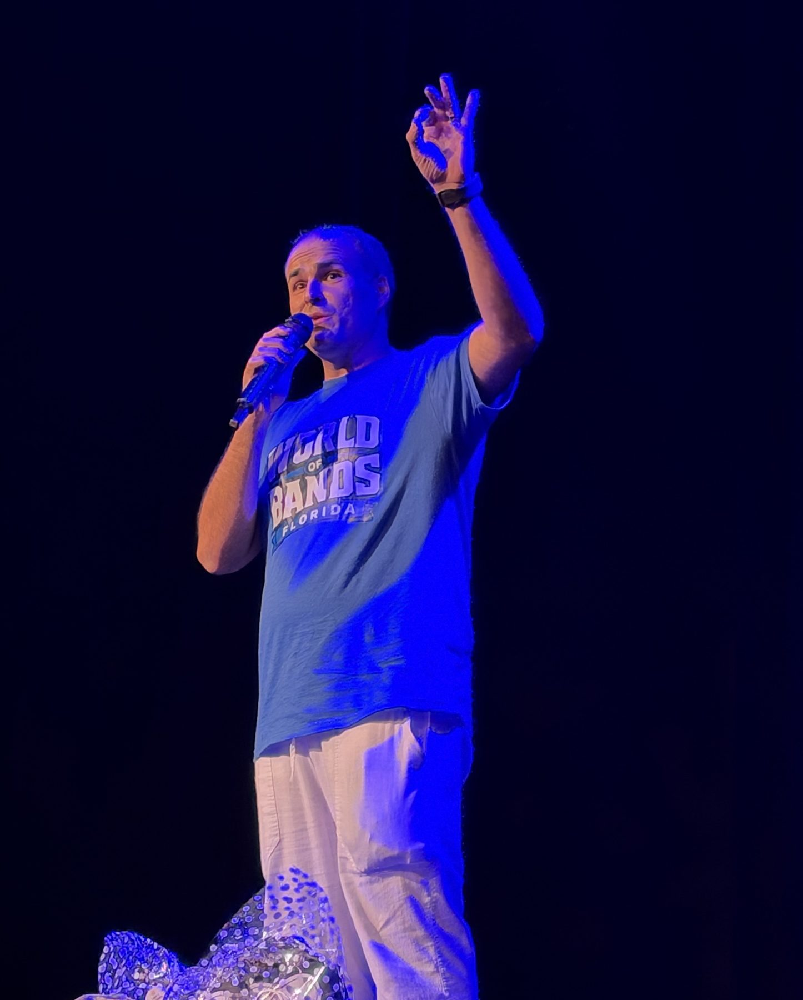
Opening ceremonyCeremonia de apertura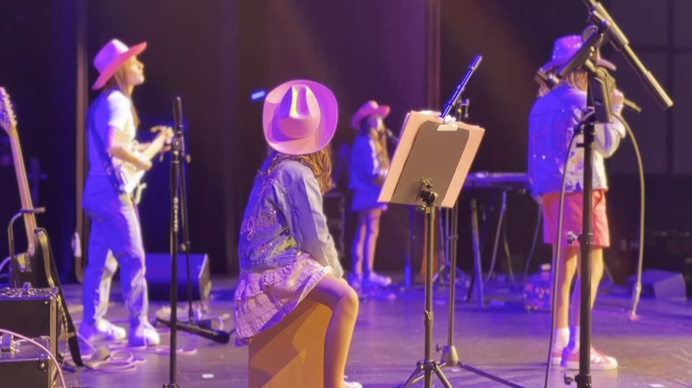
Every band brought a lookCada banda trajo su estilo Clermont Performing Arts CenterClermont Performing Arts Center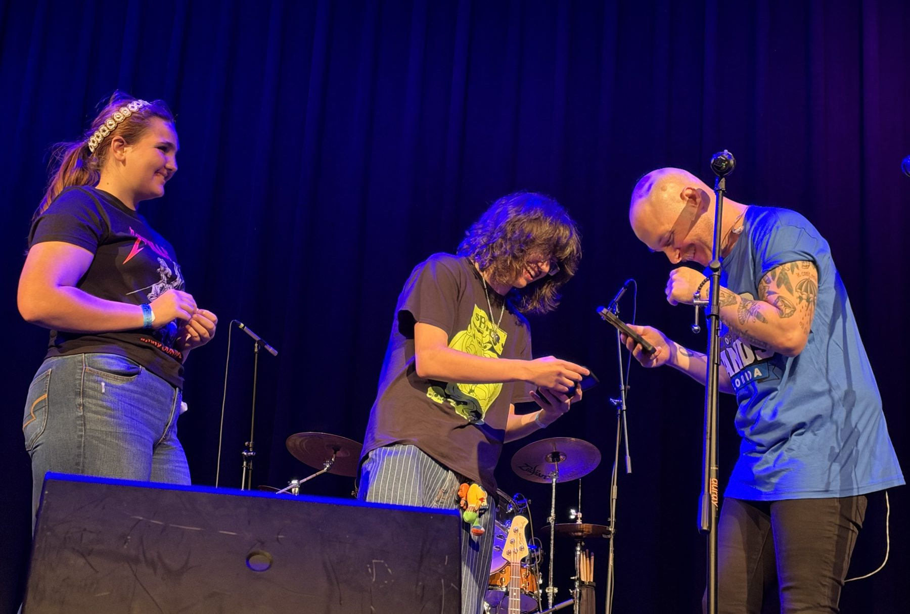
Judges' feedback, liveComentarios de los jueces, en vivo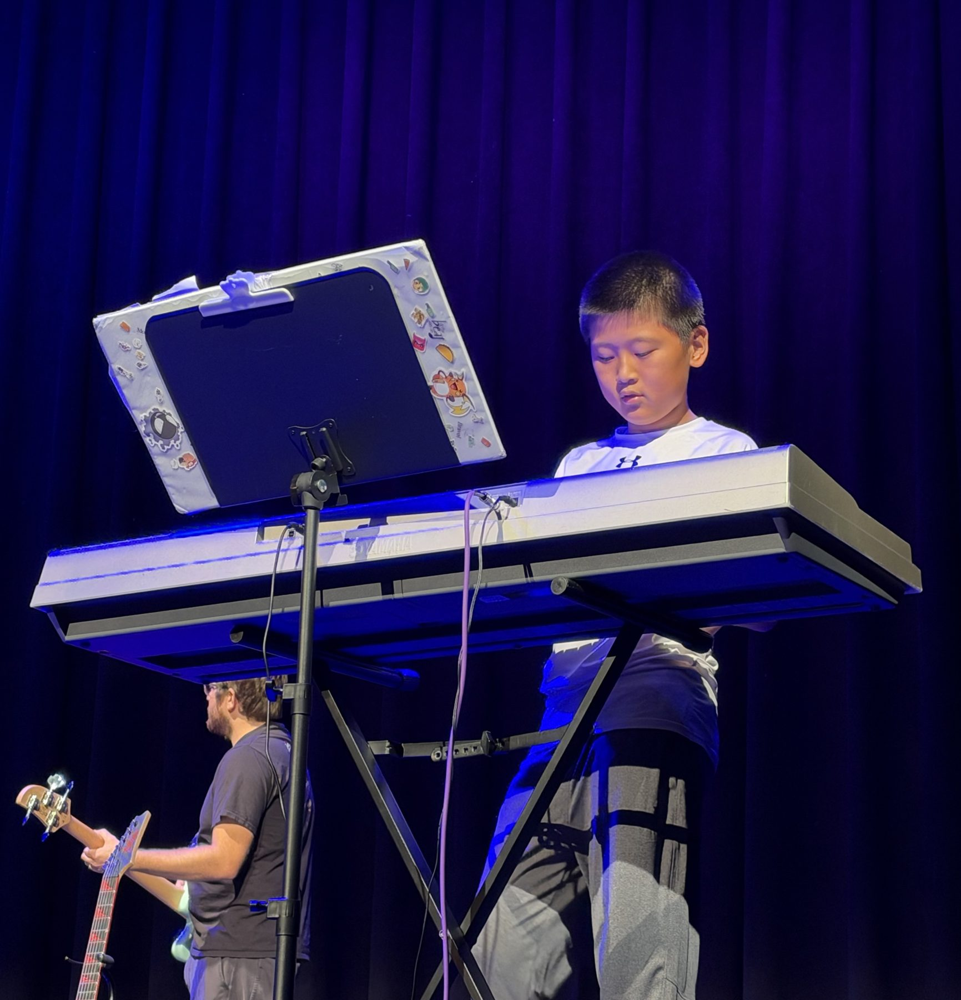
Qualifying roundRonda clasificatoriaMore photos and every band's set on Instagram atMás fotos y el set de cada banda en Instagram en @worldofbandsflorida · full 2026 results →resultados 2026 completos →
Three competitive stages. After qualifying, all scores reset to zero — so every band starts its division with an equal shot at the title. Tres etapas competitivas. Después de la clasificación, todos los puntajes vuelven a cero — así cada banda empieza su división con las mismas posibilidades de ganar.
All 12 bands play a 5-minute set of their strongest material in front of the judges and the crowd.Las 12 bandas tocan un set de 5 minutos con su mejor material frente a los jueces y el público.
The judges' top 5 advance to Division 1 — and the 6th spot is claimed by the audience's Crowd's Favorite vote. The other six form Division 2.El top 5 de los jueces avanza a División 1 — y el 6.º lugar lo decide el voto Favorito del Público. Las otras seis forman la División 2.
Each division battles with full 10-minute championship sets — pro lighting, band intros on screen, and two complete awards ceremonies.Cada división compite con sets de campeonato de 10 minutos — iluminación pro, presentaciones en pantalla y dos ceremonias de premiación completas.
The six strongest bands of the day. The main event of the day, presented with full production.Las seis bandas más fuertes del día. El evento principal del día, con producción completa.
The six bands that didn't make Division 1 — with a fresh scoreboard, its own podium, category recognitions, individual awards, and awards ceremony.Las seis bandas que no llegaron a la División 1 — con marcador nuevo, su propio podio, reconocimientos por categoría, premios individuales y ceremonia de premiación.
The crowd voted three times.El público votó tres veces. ① After qualifying, the audience's favorite band claimed the sixth spot in Division 1. ② Division 1 had its own Crowd's Favorite Award. ③ Division 2 had one too. The fans made the difference.① Tras la clasificación, la banda favorita del público ganó el sexto lugar de la División 1. ② La División 1 tuvo su propio Premio Favorito del Público. ③ La División 2 también. Los fans hicieron la diferencia.
Qualified judges evaluate every performance — in qualifying and in the divisions — across the same four official categories.Jueces calificados evalúan cada presentación — en la clasificación y en las divisiones — con las mismas cuatro categorías oficiales.
Pitch, timing, execution, balance, dynamics, transitions — the overall musical quality of the set.Afinación, tiempo, ejecución, balance, dinámicas, transiciones — la calidad musical del set.
Confidence, movement, use of the stage, band chemistry, professionalism, and recovery under pressure.Confianza, movimiento, uso del escenario, química de banda, profesionalismo y recuperación bajo presión.
Original arrangements, bold interpretations, medleys, original music, and a performance identity that's yours.Arreglos originales, interpretaciones audaces, medleys, música original y una identidad escénica propia.
Connection, energy, memorable moments, entertainment value — the effect your band creates inside the venue.Conexión, energía, momentos memorables, valor de entretenimiento — el efecto que tu banda crea en el teatro.
An independent, unbiased panel.Un panel independiente e imparcial. No judge teaches at any participating school. The panel is made up of music industry professionals — musicians, producers, and other unbiased experts — scoring every band on the same four categories, in qualifying and in both divisions.Ningún juez es maestro de una escuela participante. El panel está formado por profesionales de la industria musical — músicos, productores y otros expertos imparciales — que puntúan a cada banda con las mismas cuatro categorías, en la clasificación y en ambas divisiones.
From doors at 9:00 AM to the final group photo — here's how the day unfolded.Desde la apertura a las 9:00 AM hasta la foto grupal final — así se vivió el día.
📍 Clermont Performing Arts Center · 3700 S Hwy 27, Clermont, FL 34711 · free on-site parking · 📍 Clermont Performing Arts Center · 3700 S Hwy 27, Clermont, FL 34711 · estacionamiento gratis · Open in Google MapsAbrir en Google Maps
Food, merch, the lobby vendors and the guest drawing. Performers check in from 9:00 to 9:30 AM.Comida, merch, los vendedores del lobby y el sorteo para invitados. Los músicos hacen check-in de 9:00 a 9:30 AM.
The 5 schools, 12 bands, and judges are introduced live.Se presentan en vivo las 5 escuelas, 12 bandas y los jueces.
Five-minute sets. Judges score, audience votes Crowd's Favorite.Sets de cinco minutos. Los jueces puntúan, el público vota a su Favorito.
Judges tally the scores while the crowd vote closes. Grab a snack, hit the lobby.Los jueces suman puntajes mientras cierra el voto del público. Un snack, una vuelta por el lobby.
Taught by Wilson Tocto. Open to everyone in the building.Dictada por Wilson Tocto. Abierta a todos en el lugar.
Top 5 by judges + the Crowd's Favorite go to Division 1. Scores reset to zero. Then lunch and the lobby experience.Top 5 de los jueces + el Favorito del Público van a División 1. Los puntajes vuelven a cero. Luego almuerzo y lobby.
Taught by Jon Gant. Open to everyone in the building.Dictada por Jon Gant. Abierta a todos en el lugar.
Six bands, 10-minute sets, full production.Seis bandas, sets de 10 minutos, producción completa.
1st to 3rd place, individual awards, and the Division 2 Crowd's Favorite.1.º a 3.er lugar, premios individuales y el Favorito del Público de la División 2.
Division 1 bands prepare backstage. Food, merch, vendors, the guest drawing, photos with the bands.Las bandas de la División 1 se preparan tras bastidores. Comida, merch, vendedores, el sorteo para invitados, fotos con las bandas.
Band intros on screen, six championship sets.Presentaciones en pantalla, seis sets de campeonato.
The Division 1 Champion is crowned — with a possible encore.Se corona al Campeón de la División 1 — con posible encore.
All 12 bands, coaches, judges, and staff — one photo, one family. Doors close at 7:30 PM.Las 12 bandas, coaches, jueces y staff — una foto, una familia. Cierre a las 7:30 PM.
Final schedule. Doors open at 9:00 AM; the venue closes at 7:30 PM. Your wristband is an all-day pass — come and go as you like.Horario final. Las puertas abren a las 9:00 AM; el lugar cierra a las 7:30 PM. Tu pulsera es un pase de día completo — entra y sal cuando quieras.
Two masterclasses were built into the event day — open to students, parents and fans.Dos masterclasses fueron parte del día del evento — abiertas a estudiantes, padres y fans.
Taught byDictada por Wilson Tocto
How a band turns rehearsal hours into a set that lands on stage — preparation, energy, communication, and the mindset that separates a good performance from an unforgettable one.Cómo una banda convierte las horas de ensayo en un set que funciona en el escenario — preparación, energía, comunicación y la mentalidad que separa una buena presentación de una inolvidable.
Taught byDictada por Jon Gant
Riffs, hooks, structure, and arrangement — how to take an idea from one instrument and build it into a song the whole band owns.Riffs, hooks, estructura y arreglo — cómo tomar una idea de un instrumento y convertirla en una canción que toda la banda haga suya.
* Both masterclasses were open to students, parents, and fans.* Ambas masterclasses estuvieron abiertas a estudiantes, padres y fans.
Participating bands don't just perform — they get promoted. Before, during, and after the event, we put your musicians in the spotlight across all our social media channels.Las bandas participantes no solo tocan — las promocionamos. Antes, durante y después del evento, ponemos a tus músicos bajo los reflectores en todos nuestros canales de redes sociales.
Each band got its own official feature — name, logo, and lineup presented like the pros.Cada banda tuvo su feature oficial — nombre, logo y alineación presentados como los profesionales.
Professional event photography and video content every band can share, post, and keep forever.Fotografía profesional del evento y contenido en video que cada banda puede compartir, publicar y conservar para siempre.
On-camera interviews and backstage moments — the musicians tell their story like touring artists.Entrevistas en cámara y momentos de backstage — los músicos cuentan su historia como artistas de gira.
Features, reels, and recaps published across Instagram, Facebook, YouTube, and TikTok.Features, reels y recaps publicados en Instagram, Facebook, YouTube y TikTok.
The 2026 recap is at the top of this page. Below: the official 2026 trailer, and the invitation that brought five schools together.El recap 2026 está al inicio de esta página. Abajo: el tráiler oficial 2026 y la invitación que unió a cinco escuelas.
Six local businesses said yes in year one. From doors at 9:00 AM to the champions at 6:30 PM they fed, painted and cheered Central Florida all day, and each one put a prize into the guest drawing. They have first right to their space in 2027. Thank you.Seis negocios locales dijeron que sí en el primer año. Desde la apertura a las 9:00 AM hasta los campeones a las 6:30 PM alimentaron, pintaron y animaron a Florida Central todo el día, y cada uno puso un premio en el sorteo. Tienen derecho preferente a su espacio en 2027. Gracias.

Empanadas and coffee in the morning, pernil and chicken plates at lunch, shrimp ceviche, drinks and sweets all day.Empanadas y café en la mañana, platos de pernil y pollo al almuerzo, ceviche de camarón, bebidas y dulces todo el día.

Cakes, cookies, cake pops and pastries, made fresh.Pasteles, galletas, cake pops y pastelería, hechos frescos.

Face painting in your band's colors — $5 half face, $10 full face.Pintacaritas con los colores de tu banda — $5 media cara, $10 cara completa.
11:00 AM – 4:30 PM
Fruit-infused lemonades in chilled 16-oz pouches — mango pineapple, strawberry, blueberry and more.Limonadas con fruta en bolsas frías de 16 oz — mango piña, fresa, arándano y más.

Handcrafted soy candles, wax melts, bath bombs and artisan soaps.Velas de soya, wax melts, bombas de baño y jabones artesanales hechos a mano.
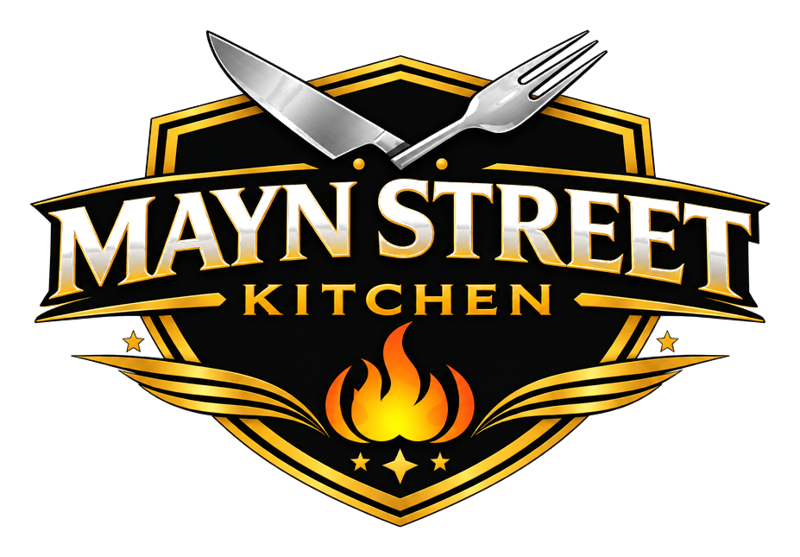
Breakfast burritos in the morning, then hot dogs, burgers and baked mac & cheese the rest of the day — the kids' food stop.Burritos de desayuno en la mañana, y luego hot dogs, hamburguesas y mac & cheese al horno el resto del día — la parada de comida para los chicos.
The World of Bands popcorn stand, the official 2026 shirt at the merch booth, and a guest drawing with prizes from our vendors.El puesto de palomitas de World of Bands, la camiseta oficial 2026 en la tienda, y un sorteo para invitados con premios de nuestros vendedores.
When the Division 1 Final started at 4:30, the whole theater lit up with LED light sticks — the best moment of the day, and the crowd made it.Cuando empezó la Final de la División 1 a las 4:30, todo el teatro se iluminó con barras de luz LED — el mejor momento del día, y lo hizo el público.
Meet all our founding vendors on the vendors page →Conoce a todos nuestros vendedores fundadores en la página de vendedores →
The five music schools that competed at World of Bands Florida 2026. Thank you to every program that sent its best bands to the stage.Las cinco escuelas de música que compitieron en World of Bands Florida 2026. Gracias a cada programa que envió a sus mejores bandas al escenario.
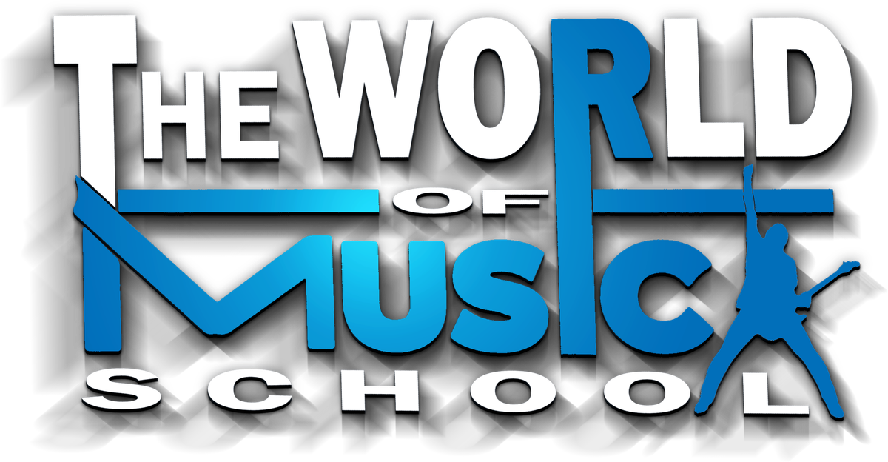
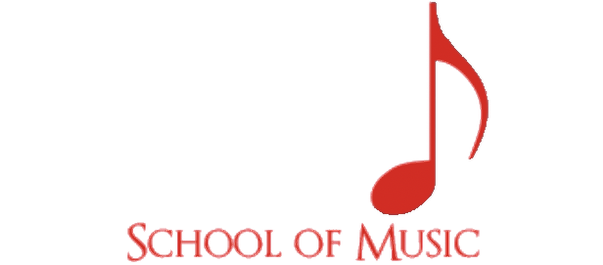
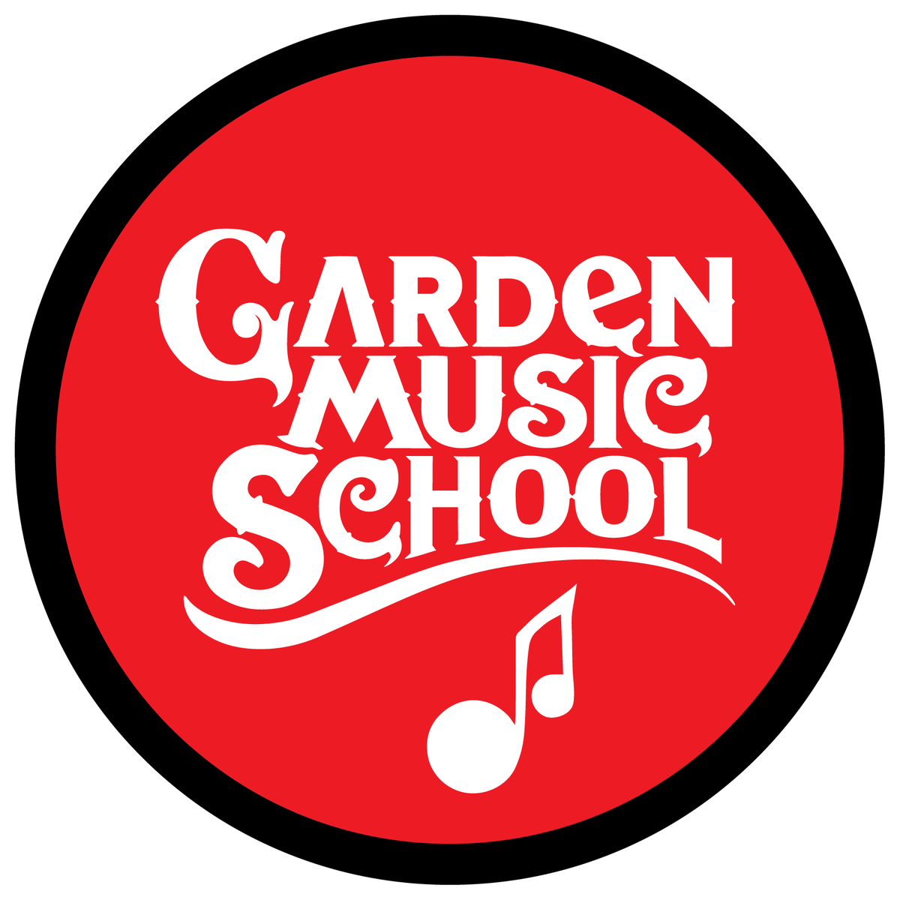
All 12 bands played.Las 12 bandas tocaron.Every band, its school, and where it landed — meet the 12 bands ↑. Band features and backstage content on @worldofbandsflorida.Cada banda, su escuela y dónde quedó — conoce las 12 bandas ↑. Features y contenido de backstage en @worldofbandsflorida.
Want your school on this stage next year?¿Quieres tu escuela en este escenario el próximo año? The 2026 field is complete and the champions are crowned. Entries for 2027 open once the date is announced — leave your details below and you'll be first in line.El grupo 2026 está completo y los campeones ya fueron coronados. Las inscripciones 2027 abren cuando se anuncie la fecha — deja tus datos abajo y serás de los primeros en la fila.
Join the 2027 ListÚnete a la Lista 2027Five schools and twelve bands took the stage — thank you to every program that stepped up. Fans: see the 2026 results. Schools and bands: leave your details below to be first in line when 2027 entries open.Cinco escuelas y doce bandas subieron al escenario — gracias a cada programa que dio el paso. Fans: mira los resultados 2026. Escuelas y bandas: deja tus datos abajo para ser los primeros cuando abran las inscripciones 2027.
Whether you run a music school, coach a band, or play in one — tell us who you are and you'll hear from us first when 2027 entries open. Sponsors: we'd love to talk about 2027.Ya sea que dirijas una escuela de música, seas coach de una banda o toques en una — cuéntanos quién eres y serás de los primeros en saber cuando abran las inscripciones 2027. Patrocinadores: nos encantaría hablar de 2027.
2026 entries are closed. New submissions go on the 2027 interest list unless they're sponsor inquiries, which we answer within 48 hours.Las inscripciones 2026 están cerradas. Los nuevos envíos pasan a la lista de interés 2027, salvo las consultas de patrocinio, que respondemos en 48 horas.
We got your info — you'll be the first to hear when 2027 entries open. Sponsor? We'll reply within 48 hours. Can't wait? Write to us directly.Recibimos tu información — serás de los primeros en saber cuando abran las inscripciones 2027. ¿Patrocinador? Te respondemos en 48 horas. ¿No puedes esperar? Escríbenos directamente.
info@worldofbands.com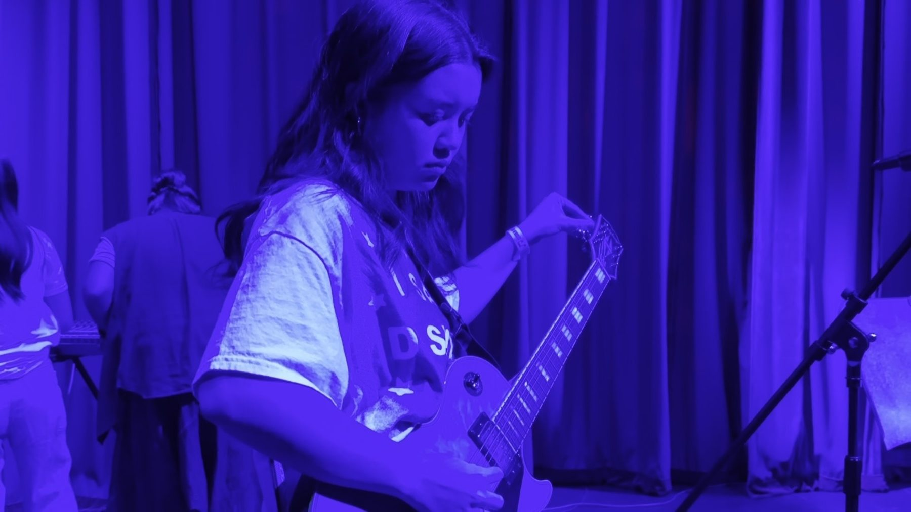
Five schools. Twelve bands. One unforgettable Sunday at the Clermont Performing Arts Center. Thank you, Central Florida — see every result, relive the recap, and we'll see you in 2027.Cinco escuelas. Doce bandas. Un domingo inolvidable en el Clermont Performing Arts Center. Gracias, Florida Central — mira todos los resultados, revive el recap y nos vemos en 2027.
See the 2026 ResultsVer los Resultados 2026